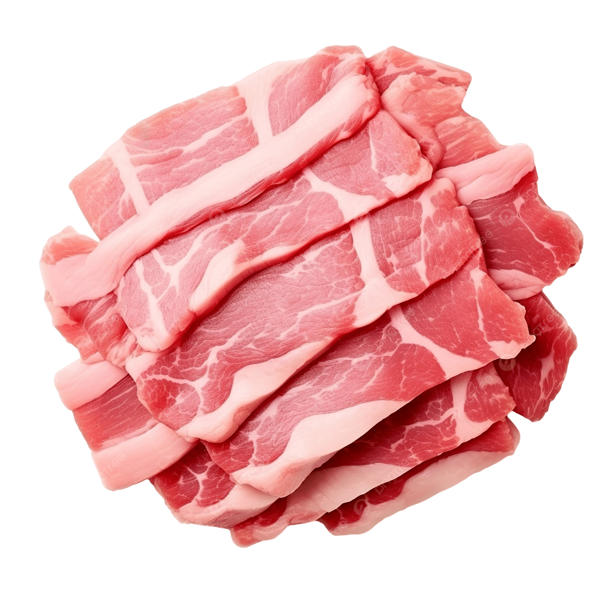
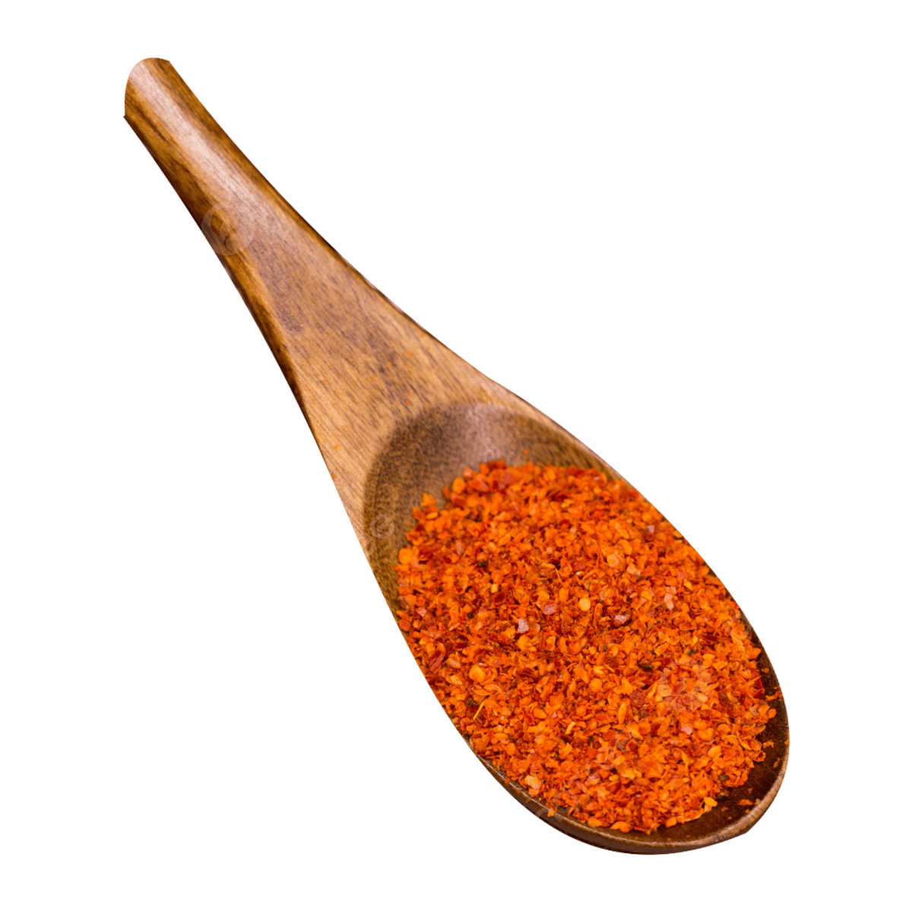

Ponyo's Ramen Bowl
Ingredients
Ramen noodles

Egg

Ham or pork slices
Green onions

Ramen seasoning
Cooking Steps
1
Bring 2 cups of water or broth to a boil in a pot over medium heat.
2
Add the ramen noodles and cook for about 3 minutes until soft.
3
Stir in the ramen seasoning and allow the soup to simmer gently.
4
Crack 1 egg directly into the soup and let it cook for about 1 minute for a soft texture.
5
Add several slices of ham or pork into the bowl so they warm in the broth.
5
Finish by sprinkling chopped green onions on top before serving hot.